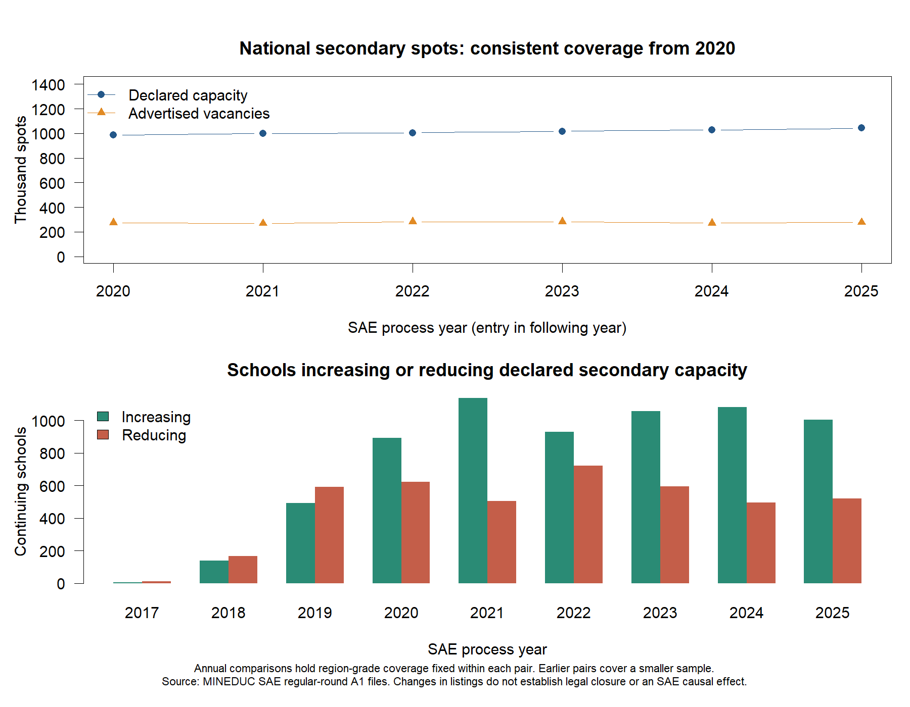

Secondary-school spots listed in SAE, every year 2016-2025
Regular-round A1 offers for grades 9-12 (1-4 medio). Process year t admits students for year t+1. The latest published archive checked on 11 November 2026 is process 2025, admission 2026.
Capacity and vacancies are different. cupos_totales is declared total capacity; vacantes is advertised available places. Changes in vacancies can reflect continuing enrollment rather than changes in capacity. An exit below means loss of positive capacity in the comparable secondary listings, not a verified school closure. No causal effect of SAE is estimated.

Annual totals: all coverage present in each release
| Process | Entry | Schools | Capacity | Vacancies | Coverage |
|---|---|---|---|---|---|
| 2016 | 2017 | 24 | 2285 | 1288 | Magallanes; grade 9 only |
| 2017 | 2018 | 496 | 55676 | 30577 | 5 regions; grades phased in |
| 2018 | 2019 | 1682 | 303248 | 131468 | Outside Metropolitana; grades phased in |
| 2019 | 2020 | 2501 | 728386 | 245613 | National grade 9; grades 10-12 outside Metropolitana |
| 2020 | 2021 | 2504 | 985972 | 274677 | National; grades 9-12 |
| 2021 | 2022 | 2511 | 999353 | 268769 | National; grades 9-12 |
| 2022 | 2023 | 2518 | 1005444 | 282136 | National; grades 9-12 |
| 2023 | 2024 | 2530 | 1017814 | 282976 | National; grades 9-12 |
| 2024 | 2025 | 2536 | 1029002 | 271974 | National; grades 9-12 |
| 2025 | 2026 | 2552 | 1043233 | 276448 | National; grades 9-12 |
Raw totals before 2020 are affected by the regional and grade rollout. Grade 9 becomes national in process 2019; all four secondary grades are national from process 2020. The 2024 release also has an A3 waitlist-stage revision; this series consistently uses initial regular-round A1 offers in every year.
Annual changes using comparable coverage
| Process | Continuing | Increasing | Reducing | Unchanged | Entries | Exits | More_vacancies | Fewer_vacancies |
|---|---|---|---|---|---|---|---|---|
| 2017 | 23 | 6 | 10 | 7 | 2 | 1 | 10 | 11 |
| 2018 | 484 | 137 | 165 | 182 | 3 | 12 | 202 | 256 |
| 2019 | 1671 | 491 | 591 | 589 | 21 | 11 | 651 | 931 |
| 2020 | 2484 | 891 | 621 | 972 | 18 | 17 | 917 | 1482 |
| 2021 | 2499 | 1138 | 504 | 857 | 12 | 5 | 1055 | 1349 |
| 2022 | 2506 | 928 | 720 | 858 | 12 | 5 | 1515 | 918 |
| 2023 | 2514 | 1057 | 593 | 864 | 16 | 4 | 1205 | 1235 |
| 2024 | 2520 | 1081 | 495 | 944 | 16 | 10 | 1045 | 1401 |
| 2025 | 2525 | 1003 | 520 | 1002 | 27 | 11 | 1310 | 1132 |
For each adjacent-year pair, retain region-grade combinations observed in both releases, then sum all programs to RBD. Increasing/reducing/unchanged require positive declared capacity in both years. Entries/exits include movements from/to zero capacity or no listing. All changes count, including one seat; the CSV also reports changes greater than 10 seats. Zero advertised vacancies alone never defines an exit.
Secondary listings exiting positive capacity in process 2025
| RBD | School | Comuna | Prior_capacity | Still_in_SAE |
|---|---|---|---|---|
| 365 | COLEGIO EAGLE SCHOOL | ANTOFAGASTA | 325 | FALSE |
| 2057 | ESCUELA PARTICULAR N. 33 MARIA KONIG | SAN ANTONIO | 180 | FALSE |
| 2829 | ESCUELA BASICA LUIS ESCOBAR LARA | ROMERAL | 30 | TRUE |
| 2974 | LICEO IGNACIO CARRERA PINTO | TALCA | 120 | FALSE |
| 3267 | ESCUELA GRACIELA LETELIER | LINARES | 64 | TRUE |
| 8644 | COLEGIO INDUSTRIAL VASCO NUNEZ DE BALBOA | SANTIAGO | 350 | FALSE |
| 11465 | COLEGIO LATINOAMERICANO | TEMUCO | 45 | TRUE |
| 13586 | COLEGIO CHRIST SCHOOL | LA SERENA | 600 | FALSE |
| 22313 | COLEGIO CARDENAL RAUL SILVA HENRIQUEZ | PAILLACO | 172 | FALSE |
| 22495 | COLEGIO PARTICULAR CARDENAL RAUL SILVA HENRIQ | RÍO BUENO | 180 | FALSE |
| 31005 | COL. EDUC VICTOR MANUEL GIOVANETTI ASTUDILLO | LA UNIÓN | 120 | FALSE |
Still_in_SAE indicates any A1 listing at any grade in 2025. Even absence from all SAE does not establish permanent closure.
Downloads and reproducibility
Annual totals | Annual changes, including separate grade-9 comparisons | School-by-school changes | Official sources
Program keys, valid capacity/vacancies, geography completeness, and exact seat/school accounting are checked by the script. Directory data supply geography and names only; their operation and enrollment fields do not define the sample.